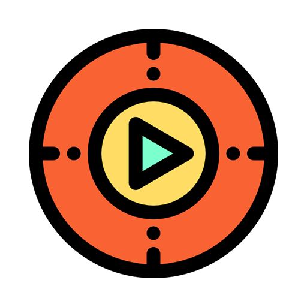

MI TOTAL PLAYER
🎵 ÁLBUMES
📻 RADIO
📺 TV NEWS
< VOLVER A HOME
< VOLVER A ÁLBUMES

Canción
Álbum
⏮
▶
⏭
< VOLVER A CANCIONES
Selecciona Emisora
Radio 1
SER
COPE
▶
< VOLVER A HOME
24h RTVE
Noticias 2
< VOLVER HOME